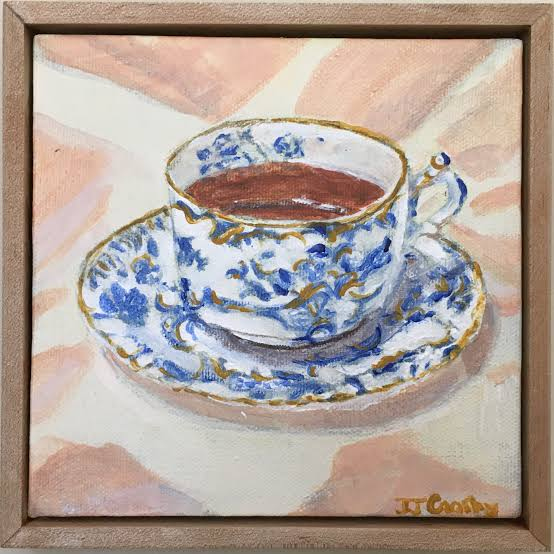

Prose
Althea

It is my great honour to participate in a personal history program, an outreach by postgraduate students of the City University Nursing Program of Calgary, Alberta. Briefly put, it is the story of myself and my family. While this is my story to tell, dear reader; it is yours to cherish. Nigh on 92 years of age, and only recently having concluded my tenure as a volunteer working with seniors, I have somewhat regrettably been forced to acknowledge my advanced age. I retired from my post-retirement work, grudgingly, in much the same way I concluded my nursing career. I do not take these steps with a heavy heart however, as I consider myself to have been a genuinely and generally very lucky person. Although I have had the good fortune to find myself on the receiving end of numerous awards in my new life in the new world, in areas of health, literacy and geronotology, I consider my marriage to George, as my topmost achievement. I shall always be grateful to him for the gift of my family and all of its descendants.
My beginnings are located in Stoke-on-Trent in Staffordshire, England. I was born Althea Evelyn Maidenstone. After having been married to my late husband, George Grahame for well over 65 years, my name continues to be (for the last 68 years at least) Althea Grahame. My parents were Vera and Thomas Maidenstone (Vera neé Hubley). They met working in the Worthingstoke ceramics factory, a name synonymous with fine porcelain. It was the genuine article. My father was a glaze technician. He met my mother whilst she operated a teacart there. For a brief spell, she worked the line, picking out seconds and thirds.
My mother recalls my dad being a man in search of refills. She flat out denied him the pleasure of her company on three separate occasions. She agreed to a date at a competing coffee shop on a whim. Subsequently it has been described by her as “a not unreasonable change of heart.” One can make what one will out of her controvertible use of the double negative.
Eventually, she traded her tea cart expertise in for a rather unprepossessing tea house. It was like a food cart today without the benefit of wheels, a kind of giant tinned ham can, hotter than hades. Weather conditions aside, her homemade sultana scones attracted customers like proverbial flies to the proverbial honey pot. She was an autodidact on Assam and Ceylon black tea. Mum longed to one day see the birthplaces of those varietals. As life will have it, she settled for a short trip to China, home to her secondary and tertiary favourites: Lapsang Souchong and Oolong. While Lapsang Souchong is a black tea, Oolong is neither a black nor green tea. The French in their infinite wisdom call it thé bleu.
When my mother turned 70, I bought tickets to round out a City University alumni trip to Beijing for 6 nights and 7 days. My mother had always craved a visit to the Great Wall. She posed for a photo in stereotypic mid-climb. “Like an Olympian biting down on a gold coin,” I teased her. She complained latterly that she never properly readjusted to the time difference foisted upon her during that trip. Vera was a woman of strong opinions who never hesitated to express them. I remember my father as a kind, uncomplicated man, taciturn by all accounts. By the time my mother had reached age 70, she had outlived him by ten years. Once she declared him the love of her life, she never properly considered marriage again.
In the 30 years my father worked as a glazer in the Worthingstoke factory, it was referred to as porcelain or even Worthingstoke, but never as china. The war interrupted his employment briefly. Other workers saw their jobs cut or mechanized, but my father and a handful of others continued until the mid-1950s. Upon retirement, he destroyed all the family Worthingstoke.
Our youngest boy and second son, Anthony, and I and his wife Sandra and their two girls Ashley and Maris visited the Ai Wei Wei exhibit in Toronto in the 2000s. It was Sandra’s idea. I didn’t put much stock in it to tell you the truth, Sandra being the kind of girl who once mistook the little obsidian recipe holder George and I gifted them for an objet d’art. George asked her “Whatever have you got the recipe-holder up on the mantel for?” Sandra never saw a museum-store-tchotchke she could pass by. Her generally useless instincts aside, I was moved to pieces at the sight of the exhibit of the Han pottery he had smashed into bits. There exists for me a kind of phantom memory of my dad bundling the Worthingstoke into an old tablecloth destined for a box for the Sally Ann. Also, a china-throwing spree remains involving judiciously applied taps of a hammer as a possibility. My father loathed waste. I remember suffering through every last bite of some inedible meal as a child. My gran would burst in and dismiss me. If not for Gran, I think I’d still be sitting at that table contemplating an indecipherable stewed piece of meat in a sea of Bisto, a British-cooking-stalwart.
Michael was just a baby when war broke out. In 1939, my father signed on as a neighbourhood organizer, helping out during air raids. Eventually he saw active duty in the theatres of war in Belgium and France. We admired his war efforts though we missed him dearly.
I’m not sure which was more trauma-inducing, the war, or getting stuck with the care and feeding of my little brother. While Mother laid claim to the proper noun, I administered the verb. When he slammed willy nilly into Gran’s antique Chinese screen, I proved to be a dab hand at the little white lie, a sacrifice thoroughly underappreciated by him. Until the day she died, our Gran claimed that my clumsiness resulted in the beheading of the mother-of-pearl figure lovingly called the traveller. I never told tales out of school on Michael. Even when his cat-dander allergies proved disastrous, I supported. It broke my heart to give my cat Margaret away. I never saw her Majesty little Minxy Margaret Mitford, after that and rather too much of brother Michael. There’s also the Michael-induced case of rubella that reared its itchy head graduation-party-day. Michael prevailed however, becoming a widely-respected barrister at a posh legal office in London. We travelled together to the Canaries and the Maldives. He gifted me a Chinese-screen-charm from the Silver Vaults as a keepsake. After his death, I wore it as a necklace. Although Sandra admired it with fanatical frequency, it was meant for Aldona. When she rejected it, I gifted it to a fellow British volunteer.
Wartime interrupted my mother’s tea business. She pivoted to joining a women’s collective that anthologized cookery books under the auspices of nutritious budgetary meals. You can’t predict what will be touchstones for the generations ahead. Time erases the good and bad. I treasured those books. Everyone owned a beat-up Mrs. Beeton’s. They were not aspirational so much as encyclopaedic. Beeton was neither cook nor baker but collector. Amassing a compendium from an admixture of sources is peculiarly British. Beeton borrowed from the best.
The delightfully frugal cookbooks my mother appreciated were of a rather different sort. They were tied specifically to the war. Secondly, and this is the fun part really, they were peculiarly soft on weights and measures. Even the ingredients were subject to substitutions owing to wartime shortages. This did not result in the mere swopping a parsnip or a wanton chunk of celeriac in place of a potato, but also reinventing the lowly beetroot as a poor-man’s portion of beef or gammon. The metaphorical defenestration of treasured china did not gut me in the way of my mislaid cookery books. They existed for me like a Borges fever dream. Vera claimed ascendancy to her baking career honestly borne of a Cholmondoley parlour maid (pronounced Chumley). I happily acknowledge the tireless British lack of consistency in pronunciation. One might gawp at words like specialty (speciality we like to say) side-by-side with names such as Cholmondoley. There’s a thesis in there somewhere, and if I live long enough, I shall sit down to write it. My mother stubbornly resisted a life of service. The bakery/café was a domestic sphere that she controlled unequivocably with the interests of her paying customers being of paramount concern.
She hung onto the Worthingstoke tea set from her original cart until late in life. I earmarked it for our daughter, Aldona, who as life will have it, is a trained chef. It had eventually thinned down to Mum’s creamer and sugar basin. After Sandra (with trademark casual ox-like aplomb) chipped the creamer, we mislaid the sugar pot. The tea tray, bearing an 1868 hallmark, survives. Its most positive aspect remains being something none of my relations could figure out the possibilities of wrecking. While my late husband’s work might be considered artisanal, he and others laboured steadily at the mercy of their employers. They worked long hours for an unreasonable pay. Men made those kinds of sacrifices then, to say nothing of the war. These struggles were meant to be borne silently. That was what it was to be British. The hallmark, as it were.
When George and I made passage for freedom in the colonies, we knew less than nothing about Canadians. And yet we happily volunteered to be citizens of that far-off place. We knew we were really in it, after I had our children: Martin, Aldona and Anthony in Canada. Early in their lives, we returned frequently to England so the children would always experience their connection firsthand. Though a lifelong contrarian, Vera would never have had it any other way. England remained her home, from birth to death. George and I produced Martin, a marketing specialist, and Anthony, an orthopedic surgeon. Martin retired early and took up a second career in computers. Our only girl, Aldona, so cherished by George, vowed never to retire from her beloved profession. Surgeons are not known for having lengthy careers, although Anthony found his role in academia, culminating in a teaching position and the bones of a text book submitted for consideration of an internationally-respected academic publisher.
Our grandchildren, Fiona and Thompson (Martin) and Ashley and Maris (Anthony) settled in Toronto, London and Waterloo. For George and me, leaving our home in Western Canada was never cause for consideration. After all we had the pleasure of travelling extensively in Europe with diversions to: Beijing, Malta, Sri Lanka, Colombia and Cuba. Diversions might be a misstatement as these trips proved educative and valuable. Travelling allowed us the recompense of appreciating our comfortable, productive Canadian lives. We renewed our commitment to community service.
In the spirit of pay-it-forwardism we became volunteers and never looked back. Our English resolve was put to good use in our adoptive country to help our seniors, immigrants and homeless people. After retiring from a nursing career spanning many years at a world class hospital, it is safe to say that I discovered my real helping nature upon retirement from professional employment. The day I walked out of my last healthcare job, I signed up at a local food bank. By happenstance, I discovered the growing need for teachers for non-literate and semi-literate adults. They are not merely those nominal and nominally described illiterates, but people, best described adjectivally, objectively and humanely. I had found my calling. George said I was never so busy as when I ceased to be a paid employee. It was then that I began to share my love of reading both technically and immersively. For this I was well-rewarded. Ultimately, George and I were motivated not by accolades or festschrifts but by a genuine love and respect for people from all countries and all walks of life.
Catherine Dean lives in Thunder Bay, Ontario, Canada. Her work has been featured in "Wildscape. Literary Journal" and in "shoegaze literary" magazine. In May 2026, "Blood and Honey" literary magazine published "Long and Behold". "Blade and Bloom Arts and Literary Magazine" carried the story "Overthinking" recently in print, to be featured digitally in August. She belongs to an online writing group known as "WWW" from North Bay. Recently she has rediscovered playing the guitar.